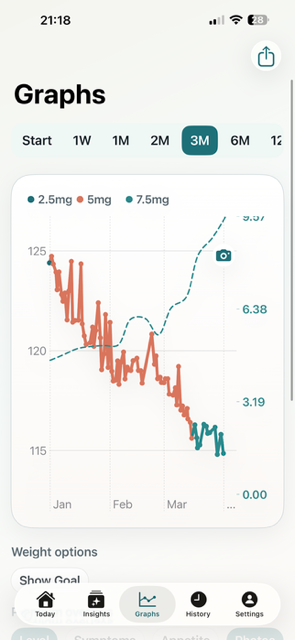

Logging
Track doses, weight, and symptoms in one routine
GLPzy keeps dose logging, weight logging, symptoms, appetite, notes, and reminders together so personal tracking stays easier to revisit.
GLPzy gives people using Zepbound a straightforward iPhone tracker for doses, weight, symptoms, reminders, and personal review. Keep routine details together and easier to revisit later.

GLPzy keeps dose logging, weight logging, symptoms, appetite, notes, and reminders together so personal tracking stays easier to revisit.
Use history, charts, and reminders to review what happened over time without moving between multiple apps or spreadsheets.
GLPzy can read Apple Health weight history, height, body composition, sleep, movement, and workout summaries in read-only mode if you enable it.
GLPzy focuses on doses, weight, symptoms, reminders, history, and review tools. It is designed for personal tracking, not diagnosis or treatment decisions.
Estimated medication level for personal tracking only. Not medical advice.
Always check with your clinician before making medical decisions.
Use the App Store or TestFlight link when available, or join the waitlist for launch updates.
Yes. GLPzy is an iPhone app for personal tracking of doses, weight, symptoms, reminders, and review history.
No. GLPzy is for personal tracking and review. Always check with your clinician before making medical decisions.
Optionally. GLPzy can read Apple Health context in read-only mode if you choose to connect it.
No in-app account is required for core tracking.